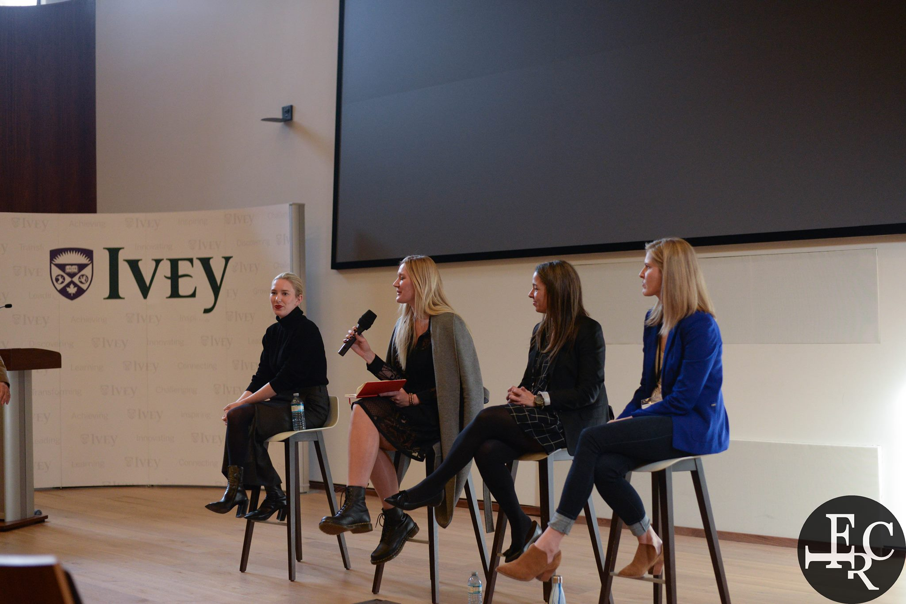
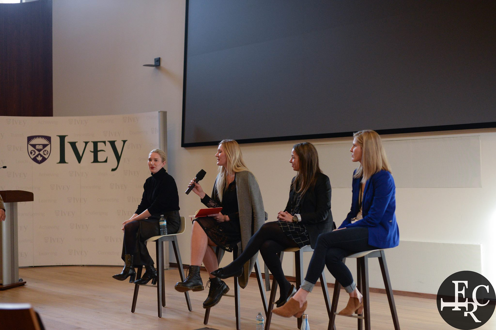
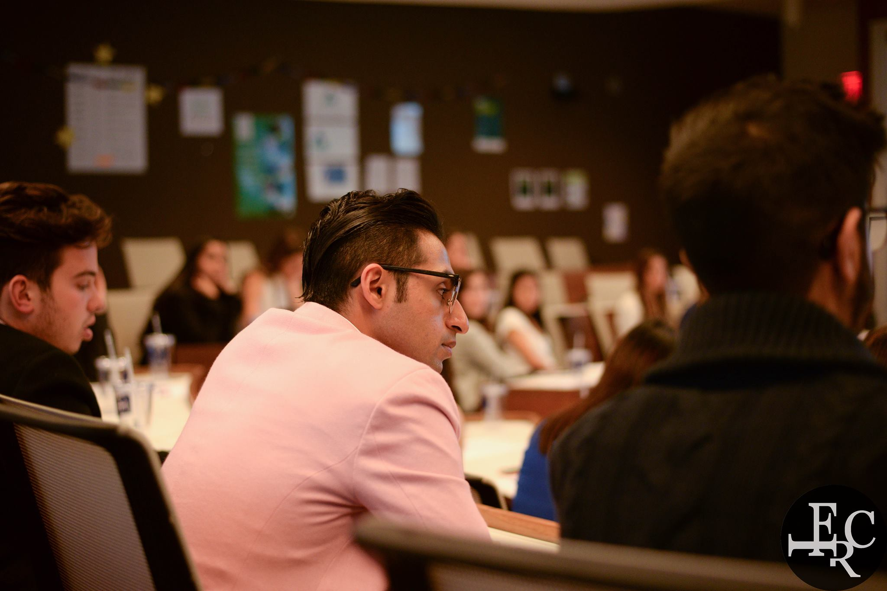
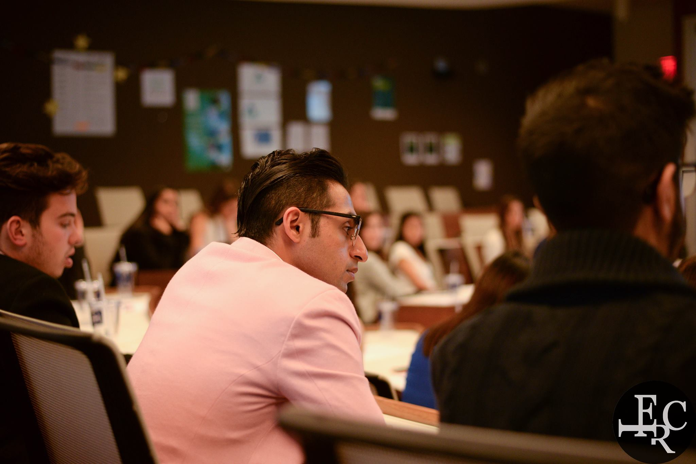

Earlier this year, the IVEY Fashion and Retail Club asked me to photograph their conference. This event sponsored various companies such as the Hudson's Bay and Calvin Klein. Through this conference, I was exposed to many companies and was also allowed to network.
Equipment
All of the photographs were shot on a Nikon D610 with either a 50mm or 16-35mm lens. I used a wide angle to encapsulate the collaborative nature of the conference itself. It also allowed for me to capture large groups and all of the action going on.
Editing
In terms of post production, I used both Photoshop and Lightroom. With Photoshop, I made slight touchups and cropping adjustments where need be. I then took my images to Lightroom in which I colour corrected each image then created and applied a standard filter over all of the images.
 

 
